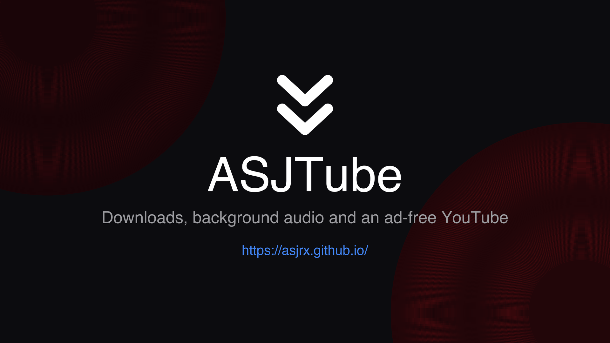
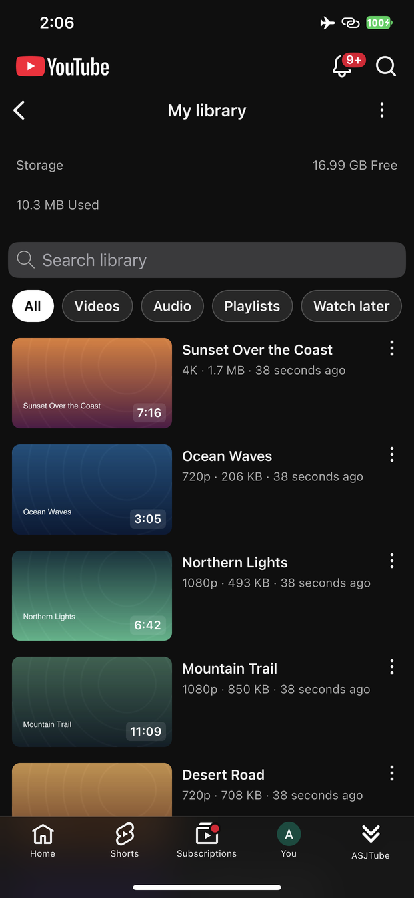
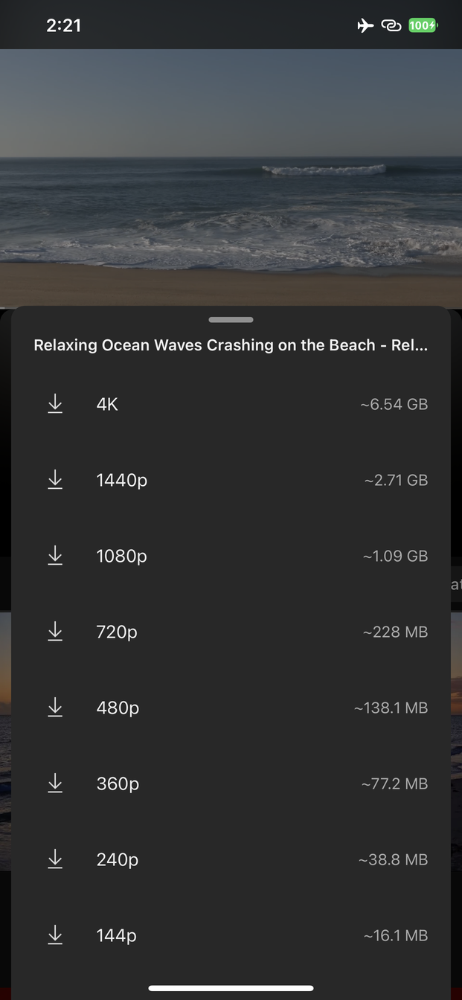
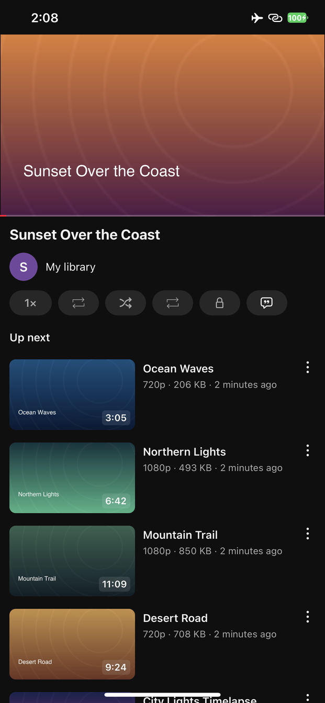
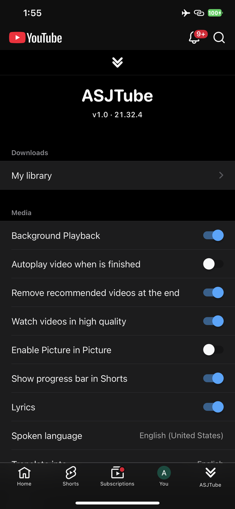
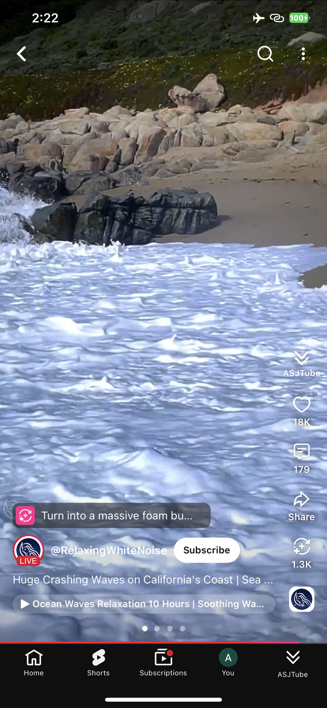
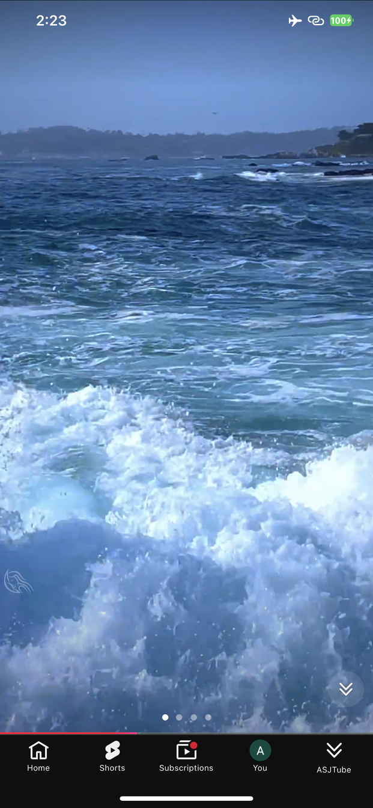
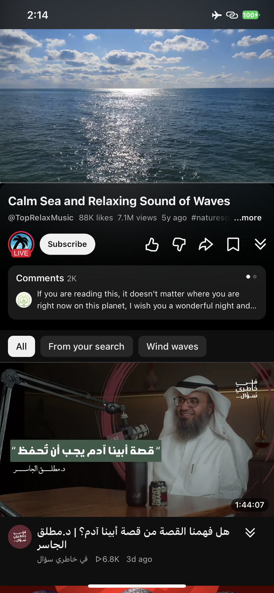

ASJTube
Downloads, background audio and an ad-free YouTube — without changing how the app looks.
Everything lives in one place: an ASJTube tab in YouTube's own bar.







Updates and new tweaks: ASJ Tweaks on Telegram
Downloads
- Save any video or Short — from the player, from a long press, from the Shorts button, or from YouTube's own Download row
- My Library — a feed of what you saved, laid out like Home, with its own player, playlists, Watch later and a storage bar
- Background playback and Picture in Picture for your own files
Playback
- Watch videos in high quality — pinned to the best rendition the video has
- Background Playback — audio keeps going when you leave the app or lock the screen
- Picture in Picture — starts on its own, no button to press
- Autoplay when a video finishes, and no suggested grid at the end
- Progress bar in Shorts
Ads
- Remove Ads — feed, search, Shorts and the player alike, refused before a card is ever built
- Non-skippable breaks are seeked past, skippable ones are skipped the moment the app allows it
- The Premium prompts, the upsell panels and the in-app surveys are all declined
Extras
- Lyrics for the song a video plays
- Spoken translation — dub a clip into another language, on the device
- Copy text from any label with a long press
- Hide Shorts, hide the create button, open the app on Shorts
- Require Face ID to open YouTube
- Open links in Safari instead of the in-app browser
- Follows YouTube's own language — all 79 of them
Not jailbroken?
TrollStore build —
keeps YouTube's own entitlements and all of its app extensions.
Anything else: sideload the IPA,
or inject the dylib into your own copy.
Contact
asjrx@icloud.com
Changelog